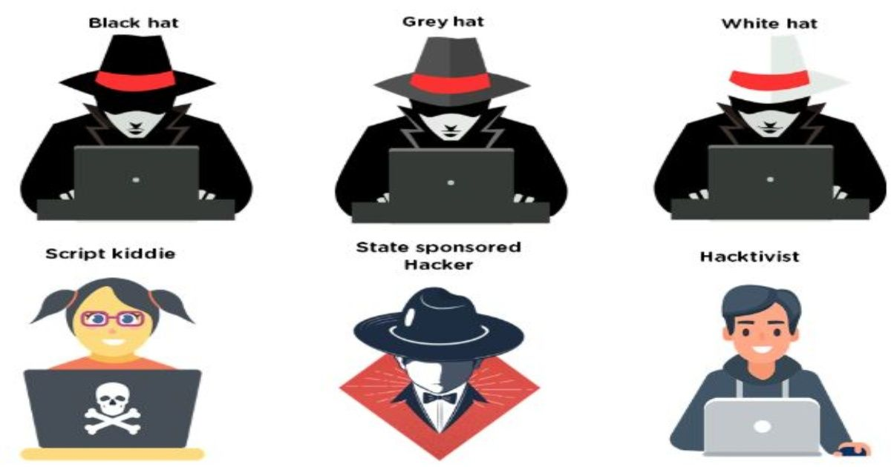

Our goal is to help aspiring ethical hackers and programmers in every way we can when it comes to penetration and security testing.

The power of technology: types of hackers
Hackers have 3 types, the grey-hat hackers, they either hack in ethical and unethical way depending on the job they have to accomplish, next are the white-hat hackers which secure most sites security through penetration testings with the permission from the site owners, and last are the black-hat hackers, also known as the crackers uses the power of hacking for crime and illegal activities such as fraud and scams.
What is the purpose of ethical hacking?
The prime purpose of ethical hacking is to prevent sensitive data from falling into enemy hands. It safeguards your company from blackmail by those willing to exploit the vulnerabilities. Via real-world testing, you can enhance your digital network security and prevent security breaches.